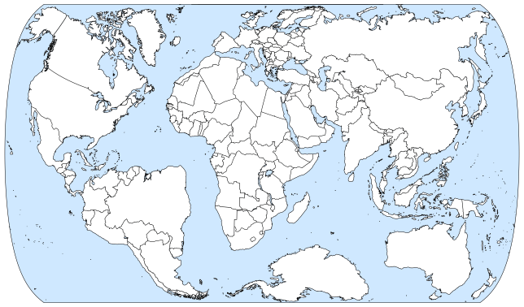

Introducing the Liquid Earth projection
2024 Oct 29

The Liquid Earth projection is a new, nearly equal-area map projection. It has exceptionally low distortion on landmasses (including islands), while maintaining a mostly north-up orientation and a familiar, symmetrical shape.
Liquid Earth is a good choice for general-purpose world maps, including political maps and physical maps. Though it is not exactly equal-area, the area deviations on land are imperceptible to the eye. (The Statistics section of this page has the specific measurements of area distortion.) This means it can be used for any application that requires area equivalence, such as dot distribution maps. Liquid Earth represents each country fairly, both in area and shape.
Other projections exist that have very low distortion, such as Elastic I, Dymaxion, and Cahill–Keyes. However, these projections fail to be north-up and/or have much more interruption than Liquid Earth, which makes them less practical. These projections are also far from being rectangular, which leads to a lot of wasted space when saved as an image or printed. By these standards, the Danseiji III projection does best, but it splits Antarctica and has an irregular shape. All four of these projections are also much farther from being equal-area than Liquid Earth.
Liquid Earth achieves low distortion on land by heavily distorting the oceans. Because of this, despite representing the continents accurately, it doesn't accurately portray the relationships between continents. In particular, it distorts latitude and longitude relationships, so it may not be a good choice for maps that relate to longitude or latitude, such as time zone or climate maps.
Similar to the Elastic projections, Liquid Earth works by starting with a mesh of the globe, then transforming the mesh. However, while the Elastic projections directly place the mesh vertices on the plane, Liquid Earth transforms the mesh on the sphere, then maps the sphere to the plane using a standard pseudocylindrical projection. This is what enables it to maintain a regular outer edge.
Formulation
The Liquid Earth projection uses two meshes, the initial mesh and the transformed mesh. The globe is projected onto the initial mesh, then each triangle is mapped to the corresponding triangle on the transformed mesh:
 Finally, the result is mapped to the plane using the Equal Earth projection. The transformed mesh anticipates the distortion caused by Equal Earth, so that the result has as little distortion of landmasses as possible. The initial mesh is octahedral, with the octahedron's vertices aligned to the coordinate axes. I added extra resolution to the mesh in places that were particularly prone to distortion. The transformed mesh was created through numerical optimization, similar to the Elastic projections. I will describe the optimization process in detail in an upcoming preprint, and will release the source code alongside it. [Update 2024 Nov 18: The preprint and source code are now available.]
Finally, the result is mapped to the plane using the Equal Earth projection. The transformed mesh anticipates the distortion caused by Equal Earth, so that the result has as little distortion of landmasses as possible. The initial mesh is octahedral, with the octahedron's vertices aligned to the coordinate axes. I added extra resolution to the mesh in places that were particularly prone to distortion. The transformed mesh was created through numerical optimization, similar to the Elastic projections. I will describe the optimization process in detail in an upcoming preprint, and will release the source code alongside it. [Update 2024 Nov 18: The preprint and source code are now available.]
Explicitly, Liquid Earth maps a point from the unit sphere to the plane using the following steps. We take the relationship between spherical and Cartesian coordinates to be
\[x = \cos \lm \cos \ph,\;\, y = \sin \lm \cos \ph,\;\, z = \sin \ph\tc\]
where $\lm \in [-\pi, \pi]$ is the longitude and $\ph \in [-\pi/2, \pi/2]$ is the latitude. (This implies a right-handed coordinate system.)
- Rotate the point $11$ degrees clockwise about the $+z$ axis. This rotation places the 169th meridian west, which passes through the Bering Strait, on the $xz$ plane.
- Project the point radially onto the initial mesh. That is, scale the vector down slightly so that it lies on some triangle $T$ of the initial mesh.
- Map the point from $T$ to the corresponding triangle $T\prm$ of the transformed mesh. We map the point using the unique affine function that takes the vertices of $T$ to the corresponding vertices of $T\prm$.
- Project the point radially back onto the unit sphere (i.e., normalize it).
- Project the point to the plane using Equal Earth. The Equal Earth projection is given by
\[x = \frac{2 \lm \cos \th}{\sqrt{3}\,(a_1 + 3a_2\,\th^2 + 7a_3\,\th^6 + 9a_4\,\th^8)}\]
\[y = a_1\,\th + a_2\,\th^3 + a_3\,\th^7 + a_4\,\th^9\]
\[\th = \sin^{-1}\Bigrou{\frac{\sqrt{3}}{2}\sin\ph}\]
\[a_1 = 1.340264,\: a_2 = -0.081106,\: a_3 = 0.000893,\: a_4 = 0.003796\tc\]
where $\lm$ and $\ph$ are longitude and latitude respectively and $(x,y)$ is the projected point.
When implementing the projection in code, step 2 requires finding which triangle $T$ the point lands on. It's usually too expensive to loop through all mesh triangles for each point you project, so it's better to create a dictionary that takes in a point (rounded so the dictionary has a manageable number of keys) and returns a small list of triangles to check.
How to use Liquid Earth
The Liquid Earth mesh files (in csv and npy format), along with svg and png templates for the map, are released here. These files are all in the public domain, though credit is appreciated. The easiest way to create a Liquid Earth map is to edit one of the svg templates. Each country is a path, so by using an svg editor such as Inkscape, it's easy to add a custom color to each country to create a choropleth map. There is a choice of 5°, 10°, 15°, and 30° graticules.
To create a Liquid Earth map from custom vector or raster data, Justin Kunimune's map projection software will soon have the projection as an option. [Update 2024 Nov 03: The projection is now available in this software.] If anyone reading this wants to implement it in another program, and would like help doing so, please contact me!
Statistics
Exact area equivalence is not achievable with a mesh-based method, so Liquid Earth is only approximately equal-area. The table below quantifies the area error of the projection. Since the Equal Earth projection is equal-area, we just need to look at the relative error between the area of each triangle $T$ of the initial mesh and its counterpart $T\prm$ on the transformed mesh. This error is $\lrver{\dfrac{\operatorname{area}(T\prm)}{\operatorname{area}(T)} - 1}$, where we compute the areas of $T$ and $T\prm$ as spherical triangles. This doesn't address deviation from area equivalence within mesh triangles, but this is negligible because of the triangles' small size. The means and percentiles below are weighted by $\operatorname{area}(T)$ for each $T$. The "land" row refers to triangles that contain any amount of land (that shows up on the dataset I used), while the "water" row refers to triangles that are entirely water.
\[ \begin{array}{c|c c c c c c}
\text{error} & \text{mean} & \text{50th \%ile} & \text{90th \%ile} & \text{99th \%ile} & \text{max} \\
\hline
\text{land} & 0.45\% & 0.30\% & 1.01\% & 2.55\% & 10.55\% \\
\text{water} & 5.65\% & 3.15\% & 10.89\% & 40.46\% & 538.48\% \\
\text{all} & 3.68\% & 1.30\% & 8.13\% & 31.86\% & 538.48\%
\end{array} \]
The interruption length of Liquid Earth is approximately $3.057$, taking an irregular path from $90^\circ\mathrm{N}$ to $69.47^\circ\mathrm{S}\: 143.40^\circ\mathrm{W}$. This is actually less interruption than that of pseudocylindrical projections (such as Equal Earth), which have an interruption length of $\pi$.
Update 2024 Dec 27
The Solid Earth projection

Using similar techniques, I have now created the Solid Earth projection. Similar to Danseiji V and Elastic III, this map shows land at a larger scale while compressing the oceans. Compared to Elastic III, Solid Earth is more north-up and fits the Earth's land into a rectangle more efficiently. This projection is a good choice for maps where space is at a premium and the only relevant information is on land. Though this map is obviously not equal-area, the area scale is fairly consistent across non-Antarctica land.
The formulation is the same as for Liquid Earth, except the meshes are different and the final projection is different. The mesh files are available here. The final projection is given by
\[x = \frac{\lm \cos \ph}{f\prm(\ph)}\]
\[y = f(\ph)\]
\[f(\ph) = 0.3\,g(\ph) + 0.7\cdot 1.4 \sin \ph\tc\]
where $g(\ph)$ is the $y$-coordinate of the Equal Earth projection at latitude $\ph$.